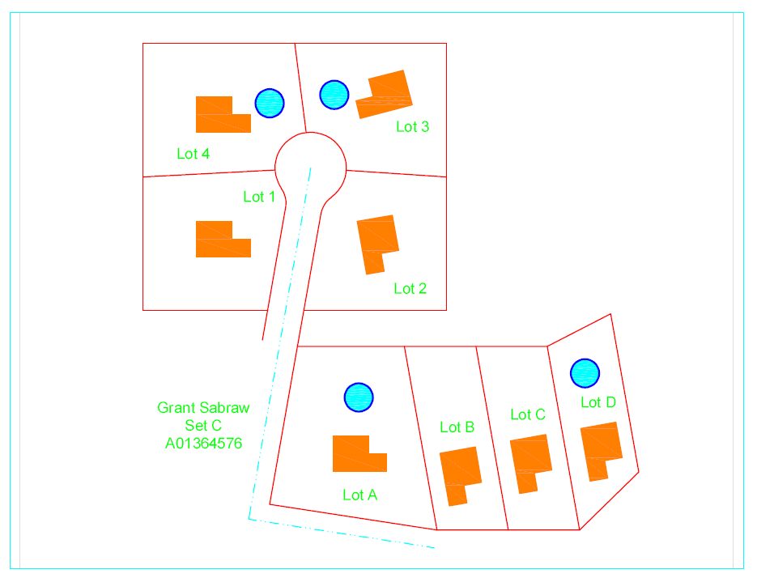

AutoCAD Cul-de-Sac Project
This project was part of a BCIT AutoCAD course that involved learning the basics of AutCAD as it relates to GIS. Below is an example of a fictional cul-de-sac drawing that was created using Coordinate Geometry or COGO techniques (e.g., using bearing and distance measurements similar to what surveyors use).
